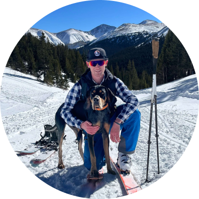

I'm a full-stack engineer based in Boulder, CO. Right now I'm helping to bridge the gap between landlords, property managers, and their residents at ResiDesk. Before that I helped keep athletes connected at Strava, worked at Relay, and was part of the great early teams at Team Engine and VTS.
When I'm not in front of the computer, you'll find me behind the woodworking bench, hanging with my dog Gonzo, or outside trail running, backpacking, and skiing.
You can check out my code on Github, my designs on Dribble, and my writing on Medium.